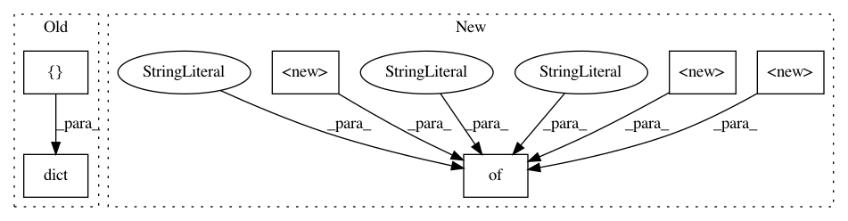

3391a348f3f7cd07a96c8e6a4b05e3e9f60c8567,pandas/tests/groupby/test_categorical.py,,,#,36
Before Change
return result.reindex(index, fill_value=fill_value).sort_index()
_results_for_groupbys_with_missing_categories = dict(
// This maps the builtin groupby functions to their expected outputs for
// missing categories when they are called on a categorical grouper with
// observed=False. Some functions are expected to return NaN, some zero.
// These expected values can be used across several tests (i.e. they are
// the same for SeriesGroupBy and DataFrameGroupBy) but they should only be
// hardcoded in one place.
[
("all", np.NaN),
("any", np.NaN),
("count", 0),
("corrwith", np.NaN),
("first", np.NaN),
("idxmax", np.NaN),
("idxmin", np.NaN),
("last", np.NaN),
("mad", np.NaN),
("max", np.NaN),
("mean", np.NaN),
("median", np.NaN),
("min", np.NaN),
("nth", np.NaN),
("nunique", 0),
("prod", np.NaN),
("quantile", np.NaN),
("sem", np.NaN),
("size", 0),
("skew", np.NaN),
("std", np.NaN),
("sum", 0),
("var", np.NaN),
]
)
def test_apply_use_categorical_name(df):
cats = qcut(df.C, 4)
After Change
return result.reindex(index, fill_value=fill_value).sort_index()
_results_for_groupbys_with_missing_categories = {
// This maps the builtin groupby functions to their expected outputs for
// missing categories when they are called on a categorical grouper with
// observed=False. Some functions are expected to return NaN, some zero.
// These expected values can be used across several tests (i.e. they are
// the same for SeriesGroupBy and DataFrameGroupBy) but they should only be
// hardcoded in one place.
"all": np.NaN,
"any": np.NaN,
"count": 0,
"corrwith": np.NaN,
"first": np.NaN,
"idxmax": np.NaN,
"idxmin": np.NaN,
"last": np.NaN,
"mad": np.NaN,
"max": np.NaN,
"mean": np.NaN,
"median": np.NaN,
"min": np.NaN,
"nth": np.NaN,
"nunique": 0,
"prod": np.NaN,
"quantile": np.NaN,
"sem": np.NaN,
"size": 0,
"skew": np.NaN,
"std": np.NaN,
"sum": 0,
"var": np.NaN,
}
def test_apply_use_categorical_name(df):
cats = qcut(df.C, 4)
In pattern: SUPERPATTERN
Frequency: 3
Non-data size: 6
Instances
Project Name: pandas-dev/pandas
Commit Name: 3391a348f3f7cd07a96c8e6a4b05e3e9f60c8567
Time: 2020-11-26
Author: fangchen.li@outlook.com
File Name: pandas/tests/groupby/test_categorical.py
Class Name:
Method Name:
Project Name: home-assistant/home-assistant
Commit Name: 71eb09ee5e9dbf56b747665c9dfec92dddc5d864
Time: 2016-06-10
Author: paulus@paulusschoutsen.nl
File Name: tests/components/test_configurator.py
Class Name: TestConfigurator
Method Name: test_request_all_info
Project Name: pandas-dev/pandas
Commit Name: 3391a348f3f7cd07a96c8e6a4b05e3e9f60c8567
Time: 2020-11-26
Author: fangchen.li@outlook.com
File Name: pandas/tests/frame/methods/test_dtypes.py
Class Name: TestDataFrameDataTypes
Method Name: test_empty_frame_dtypes